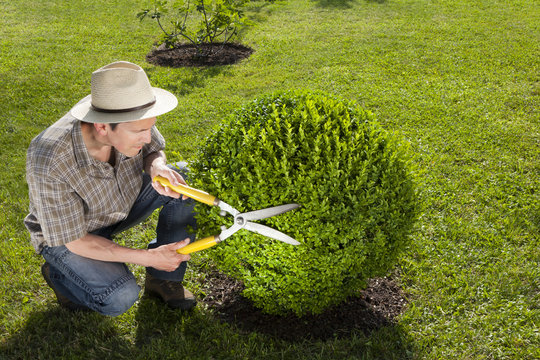

Prix d'entretien de jardin
Quel prix prévoir pour l’entretien de son jardin ?
Sommaire
- Pourquoi confier l’entretien à un professionnel ?
- Quels sont les tarifs moyens ?
- Quel tarif prévoir pour l'entretien de jardin au mètre carré ?
- Quels sont les aides et TVA disponibles ?
Vous souhaitez entretenir votre jardin ? Sachez que cela peut s'avérer être une tâche fastidieuse pour des mains non expertes. Confier l'entretien de son jardin à un professionnel garantit des extérieurs parfaits et en excellente santé. Il vous faudra compter en moyenne 540€ pour la réalisation de l’entretien de votre jardin. Néanmoins, sachez que le coût de l'entretien de jardin dépend pleinement des opérations programmées.
Pourquoi confier l’entretien à un professionnel ?
A moins que vous soyez véritablement passionné par le jardinage, il est vrai que cette pratique est souvent une véritable corvée régulière. De plus, il est important de savoir que certaines opérations d'entretien de jardin comme l'élagage ou la plantation de haies peuvent s'avérer être extrêmement physiques, voire périlleuses. En faisant appel à un jardinier professionnel, vous pouvez déléguer des opérations complexes en toute sécurité.
Si vous avez uniquement besoin d’une tonte de pelouse ou de la taille de quelques massifs, vous payerez bien évidemment moins cher que si vous désirez planter une haie ou faire élaguer des arbres dans une grande propriété. Il sera également important de prendre en compte les caractéristiques (terrain escarpé, rocailleux, etc.) ainsi que l'accès de votre terrain. Ceux-ci auront en effet une incidence sur le prix de l'entretien de jardin. Enfin, certaines opérations annexes peuvent également faire augmenter le devis de l'artisan. Aussi vous devrez prendre en compte la remise en état éventuelle du terrain ainsi que le transport des déchets verts.
Quels sont les tarifs moyens ?
Afin de réaliser vos travaux de jardinage, vous avez le choix entre faire appel à un artisan jardinier, un architecte paysagiste ou bien encore un jardinier autoentrepreneur ou une entreprise de services.
-
Pour un jardinier autoentrepreneur : il faudra compter entre 15€ à 20€ de l'heure. Il réalise généralement les travaux en utilisant le matériel fourni par le client.
-
Pour une entreprise paysagiste agréée : 30€ et plus de l'heure. Il sera parfois nécessaire d’ajouter la TVA. Elle peut fournir l'ensemble des outils et machines nécessaires. Elle assure également le débarrassage des déchets verts ainsi la mise en service du jardin.
Les tarifs moyens selon les régions sont compris entre 15 € et 35€.
Les tarifs spécifiques
Sachez que le budget va pleinement dépendre aussi des opérations que vous désirez réaliser. Celles-ci sont souvent budgétisées au mètre carré. Il faudra compter :
- Pour la tonte de pelouse : entre 0,15€/mètre carré à 0,50€ par mètres carrés. Tarif dégressif selon la superficie.
- Débroussaillage : entre 0,10€/ mètre carré et 0,30€/mètre carré. Pour arracher un arbuste ou abattre un arbre de petite taille, il faudra compter entre 40€ et 120€.
- Pour les opérations d'entretien ou bien encore de création de jardin de plus grande envergure, il sera nécessaire de calculer au mètre linéaire.
- Taille de haie : entre 5€ et 15€ par mètre linéaire.
- Plantation de haie : entre 30€ à 200€ par mètre linéaire
- Élagage d'un arbre : entre 100€ et 500 € par unité selon le diamètre.
- Abattre un arbre : selon la hauteur entre 200€ et 600€ environ.
Quel tarif prévoir pour l'entretien de jardin au mètre carré ?
Vous pouvez calculer le coût de l'entretien de jardin selon la superficie de votre terrain. Il vous faudra compter ainsi :
- Environ 360€ TTC pour un jardin inférieur à 50 mètres carrés
- Environ 560€ pour un terrain allant jusqu'à 200 mètres carrés
Quels sont les aides et TVA disponibles ?
Sachez que pour vous aider dans la réalisation de l’entretien de votre jardin, il existe des aides et des dispositifs de déduction fiscale.
- TVA à 10 % : Vous pouvez bénéficier d’une TVA réduite à 10 % pour les travaux liés à la chute d'arbre (l'enlèvement, l'abattage, le tronçonnage ou l'élagage). Seule condition que l'habitation concernée ait plus de 2 ans.
- Crédit d'impôt de 50 % : Vous pouvez bénéficier d'un crédit d'impôt de 50 %. Néanmoins, vous avez l’obligation de passer par une entreprise spécialisée ou contactez directement le jardinier comme salarié. Attention toutefois, il est important de savoir que les travaux d'élagage ainsi que tous les travaux forestiers ne sont pas pris en charge par ce dispositif fiscal.
Pour plus d'informations, n'hésitez pas à nous contacter !
Articles récents
Par J-F.Stassen

Par J-F.Stassen

Par J-F.Stassen

Par J-F.Stassen